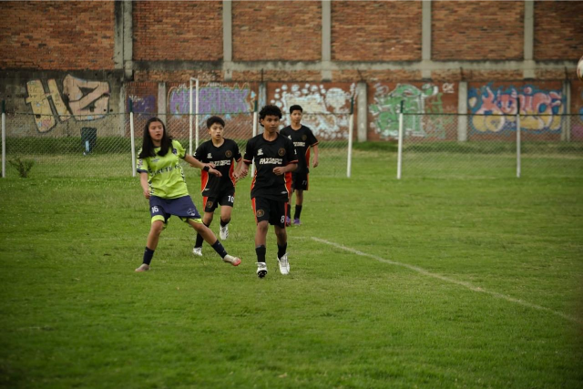

Pasion por el futbol
#LosEspartanos
GIBOR F.C 2012-2013
 RIVAL FC
RIVAL FC
 DEPORTIVO NORTE
GIBOR F.C 2016-2017
GIBOR F.C 2012-2013
DEPORTIVO NORTE
GIBOR F.C 2016-2017
GIBOR F.C 2012-2013
 ATLÉTICO SUR
ATLÉTICO SUR
GIBOR F.C. es un club deportivo comprometido con la formación integral de niños y jóvenes a través del fútbol. Nuestro programa se fundamenta en valores como la disciplina, el trabajo en equipo y la superación personal, buscando no solo formar excelentes deportistas sino también personas de bien para la sociedad.
Desde este 2026 empezamos en el fútbol formativo, nos hemos consolidado como una institución que combina la excelencia deportiva con la formación humana, proyectando talentos hacia el fútbol profesional y brindando herramientas para la vida.

Formar integralmente a niños y jóvenes colombianos a través del fútbol, desarrollando sus cualidades motrices, habilidades técnico-deportivas y capacidades humanas. Buscamos fomentar hábitos de vida saludable, fortalecer valores esenciales como la disciplina, la voluntad, el trabajo en equipo y el deseo permanente de superación.
Nuestro programa va más allá de lo deportivo, impactando positivamente en la condición humana integral de nuestros participantes y sus familias, formando ciudadanos de bien para la sociedad.
Ser reconocidos como el líder en formación deportiva integral en Colombia, destacándonos por nuestro rendimiento deportivo, servicio interdisciplinario y compromiso con la formación de deportistas integrales y talentos al servicio del fútbol colombiano.
Expandiremos nuestros servicios a nivel internacional, ampliando las experiencias de aprendizaje significativo para nuestros usuarios, a través del intercambio socio cultural por medio del deporte y la recreación, proyectando nuestros jugadores hacia el fútbol profesional.